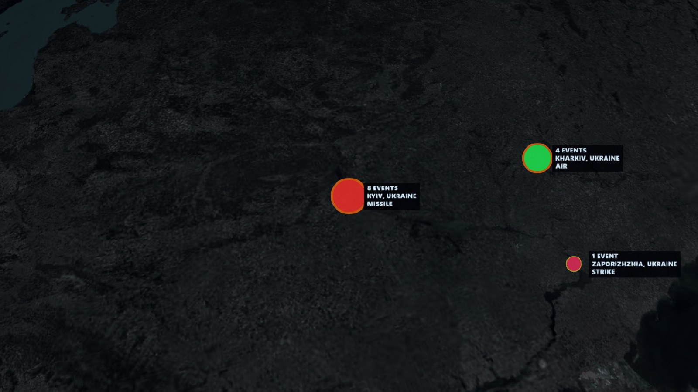
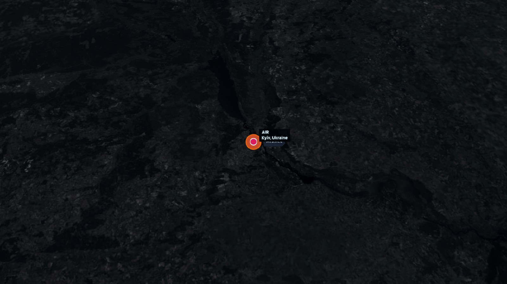
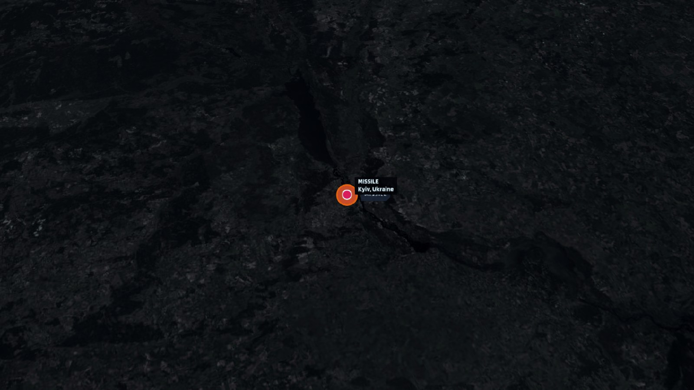
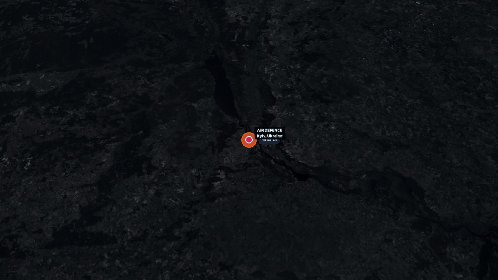

Normalized map-eligible incidents

OPERATIONAL INTELLIGENCE REPORT
2026-08-08 TO 2026-08-09
UTC

Generated from publicly available, open-source intelligence [OSINT] and information for situational awareness only.
stratops.battlespacex.comEXECUTIVE INTELLIGENCE SUMMARY
Recorded operational activity was intense during the UTC reporting window. Leading theaters were Ukraine (7 items). The strongest recorded domains were MIXED (56), AIR (31), MISSILE (21), MARITIME (18). 10 major developments met deterministic relevance criteria. 8 escalation signals and 0 disruption indicators were retained. Operational incidents changed by -9 versus the preceding snapshot.
6 critical
Confirmed or independently corroborated
Spatial operational groupings
5 type-qualified assets reviewed
Independent source families
ACTIVE THEATER
HIGHUkraine
Missile reporting led activity in Ukraine during the period. 6 high- or critical-severity developments met escalation thresholds.
7 items6 developments1 clusters0 HVA
ACTIVE THEATER
ELEVATEDEurope
Air reporting led activity in Europe during the period. 2 high- or critical-severity developments met escalation thresholds.
7 items2 developments3 clusters0 HVA
ACTIVE THEATER
ELEVATEDIsrael-Gaza
Strike reporting led activity in Israel-Gaza during the period. 3 high- or critical-severity developments met escalation thresholds.
3 items0 developments0 clusters0 HVA
ACTIVE THEATER
LIMITEDIran
Maritime reporting led activity in Iran during the period. 1 high- or critical-severity development met escalation thresholds.
4 items1 developments1 clusters0 HVA
ACTIVE THEATER
LIMITEDBlack Sea
Air reporting led activity in Black Sea during the period. 1 high- or critical-severity development met escalation thresholds.
2 items0 developments0 clusters0 HVA
ACTIVE THEATER
LIMITEDSumy Oblast
Air reporting led activity in Sumy Oblast during the period. No high- or critical-severity development met escalation thresholds.
2 items0 developments1 clusters0 HVA
ACTIVE THEATER
LIMITEDMiddle East
Artillery reporting led activity in Middle East during the period. No high- or critical-severity development met escalation thresholds.
3 items0 developments0 clusters0 HVA

KEY JUDGMENTS & WATCH INDICATORS
MODERATE
OBSERVED: Repeated operational activity was concentrated in Kyiv, Ukraine. 8 incidents contributed to the cluster; 0 were corroborated or confirmed.
MODERATE
Recurring MISSILE activity in Kyiv, Ukraine
8 clustered incidents; latest 2026-08-08T18:06:25+00:00
WHY IT MATTERSFurther activity in the same area would reinforce an already repeated operational pattern.
- Window
- 24-72H
- Domain
- MISSILE
- Area
- Kyiv, Ukraine
MODERATE
OBSERVED: Recorded operational tempo decreased versus the preceding daily snapshot. Operational event delta: -9.
MODERATE
Recurring AIR activity in Kharkiv, Ukraine
4 clustered incidents; latest 2026-08-08T20:04:00+00:00
WHY IT MATTERSFurther activity in the same area would reinforce an already repeated operational pattern.
- Window
- 24-72H
- Domain
- AIR
- Area
- Kharkiv, Ukraine
MODERATE
Recurring MARITIME activity in Middle East
4 clustered incidents; latest 2026-08-08T20:38:14+00:00
WHY IT MATTERSFurther activity in the same area would reinforce an already repeated operational pattern.
- Window
- 24-72H
- Domain
- MARITIME
- Area
- Middle East
MODERATE
Continued missile activity
21 related report items in the current window
WHY IT MATTERSPersistence or geographic expansion could indicate a material change in operational tempo.
- Window
- 24-72H
- Domain
- MISSILE
MODERATE
Continued air defence activity
13 related report items in the current window
WHY IT MATTERSPersistence or geographic expansion could indicate a material change in operational tempo.
- Window
- 24-72H
- Domain
- AIR DEFENCE
TOP INTELLIGENCE DEVELOPMENTS
1. Ukraine denies targeting Bulgaria as drone explodes near pipeline

Severity: highConfidence: 96%Verification: REPORTED
Bulgaria's defence ministry said the drone was of a type "widely used by the Ukrainian military", and the foreign minister summoned the Ukrainian ambassador for a meeting on Monday in response, her office told AFP. Kyiv said it was "in close contact with the Bulgarian side to clarify the circumstances" of the incident, the latest case of a drone straying into NATO airspace as Ukraine fights off Russia's invasion. "We can say with certainty that the Ukrainian Armed Forces did not intentionally direct any assets toward Bulgaria," Ukraine's foreign…… Independent confirmation remained limited during the reporting window.
1 raw report | 1 independent family | no official confirmation recorded2. Russian strikes kill four as Kyiv hits oil refinery

Severity: highConfidence: 84%Verification: REPORTED
At least four people, including a child, were killed in Russian attacks on Kyiv and surrounding regions early Saturday. Moscow has been exploiting Ukraine’s depleted air defences to launch waves of drone and missile strikes, while Kyiv has hit another oil refinery in Russia as part of its near-daily long-range attacks on Russian oil facilities, aiming to deepen pressure on Moscow’s fuel supplies. Independent confirmation remained limited during the reporting window.
1 raw report | 1 independent family | no official confirmation recorded3. Russian attacks kill several in Ukraine

Severity: highConfidence: 84%Verification: REPORTED
At least four people, including a child, were killed in Russian drone and missile strikes on Kyiv and surrounding regions early Saturday. Moscow has been carrying out near-daily attacks, exploiting Ukraine’s strained air defences. Meanwhile, Ukraine struck another oil refinery in Russia, as Kyiv continues its campaign of long-range attacks on Russian energy facilities in an effort to fuel a growing fuel crisis. Independent confirmation remained limited during the reporting window.
1 raw report | 1 independent family | no official confirmation recorded4. Ukraine's Zelensky visits Russian ally Serbia as Moscow pounds Kyiv

Severity: highConfidence: 96%Verification: REPORTED
Zelensky was to hold talks with his counterpart Alexander Vucic at the presidential palace on Saturday, after another intense bombardment of Kyiv and the surrounding region overnight killed at least four people. Diplomacy is at a standstill more than four years after the start of Russia's large-scale offensive against Ukraine and the two countries are ramping up long-range strikes, causing a growing number of civilian casualties. Moscow has significantly upped its attacks on the Ukrainian capital in recent months, typically firing salvos of…… Independent confirmation remained limited during the reporting window.
1 raw report | 1 independent family | no official confirmation recorded5. Child among three killed in Russian missile attacks near Kyiv
Severity: highConfidence: 55%Verification: REPORTED
Russia continued its overnight attacks after President Volodymyr Zelensky warned of Ukraine's dwindling supplies of missile interceptors. Independent confirmation remained limited during the reporting window.
1 raw report | 1 independent family | no official confirmation recorded6. Russian missile strikes near Kyiv kill three, including a child
Severity: highConfidence: 68%Verification: REPORTED
Russian missile strikes killed three people, including a child, in the Kyiv region on Saturday, said local authorities, as an air raid alert was declared in and around the Ukrainian capital due to the threat of ballistic missiles. Independent confirmation remained limited during the reporting window.
1 raw report | 1 independent family | no official confirmation recorded7. Child among three killed in Russian missile attacks near Kyiv
Severity: highConfidence: 44%Verification: REPORTED
Russia continued its overnight attacks after President Volodymyr Zelensky warned of Ukraine's dwindling supplies of missile interceptors. Independent confirmation remained limited during the reporting window.
1 raw report | 1 independent family | no official confirmation recorded8. Russian strikes in Kharkiv region leave one killed, another injured
Severity: highConfidence: 55%Verification: REPORTED
A man was killed and another person was injured in Russian FPV drone attacks in the Kharkiv region on Saturday. Independent confirmation remained limited during the reporting window.
1 raw report | 1 independent family | no official confirmation recorded9. Morning recap
Severity: highConfidence: 76%Verification: REPORTED
Good morning Middle East Eye readers, Secretary-general of the 57-member Organisation of Islamic Cooperation (OIC), Hissen Brahim Taha, has welcomed the joint defence agreement signed by Turkey, Saudi Arabia and Pakistan on Friday. Bahrain, Yemen’s internationally recognised government and a former Qatari prime minister also welcomed the pact. Turkish President Recep Tayyip Erdogan said that the Mecca Joint Defence Agreement was open to the participation of “other friendly nations”. Independent confirmation remained limited during the reporting window.
1 raw report | 1 independent family | no official confirmation recorded10. OSINTtechnical
Severity: criticalConfidence: 68%Verification: REPORTED
NASA’s FIRMS has detected a massive fire at Russia’s Syzran Oil Refinery this morning after multiple Ukrainian attack drone hits overnight. Independent confirmation remained limited during the reporting window.
1 raw report | 1 independent family | no official confirmation recordedHIGH-VALUE ASSET INTELLIGENCE
Only assets meeting StratOps priority and operational-context criteria are included. Routine traffic is excluded.
No qualified high-value asset met the Phase 2 selection criteria for this reporting window.
OPERATIONAL IMAGERY
INTELLIGENCE WIRE & SOURCE SYNTHESIS
170 raw reports were grouped into 37 independent source families. 0 items recorded official confirmation; 4 recorded direct evidence; 0 were disputed. Verification states: reported: 165, unverified: 3. Source-class mix: cyber: 21, unknown: 2, maritime: 5, official: 1, telegram: 30, major media: 14, regional media: 65, specialist defense: 30.
DevelopmentReportsFamiliesState
Ukraine denies targeting Bulgaria as drone explodes near pipeline11REPORTED
Russian strikes kill four as Kyiv hits oil refinery11REPORTED
Russian attacks kill several in Ukraine11REPORTED
Ukraine's Zelensky visits Russian ally Serbia as Moscow pounds Kyiv11REPORTED
Child among three killed in Russian missile attacks near Kyiv11REPORTED
Russian missile strikes near Kyiv kill three, including a child11REPORTED
DevelopmentReportsFamiliesState
Child among three killed in Russian missile attacks near Kyiv11REPORTED
Russian strikes in Kharkiv region leave one killed, another injured11REPORTED
Morning recap11REPORTED
OSINTtechnical11REPORTED
How Beijing’s hypersonic ‘carrier killers’ could distract US forces in a Taiwan conflict
The advancement and diversification of Beijing’s anti-ship missile platforms have bolstered its denial capabilities in the first island chain and could divert US and allied navies from warfare in a Taiwan Strait contingency, according to analysts. Last week, Chinese state broadcaster CCTV released a video of a Type 052D destroyer firing a YJ-20 hypersonic…
South China Morning Post World | REPORTEDNavy says it is spending 25% more time monitoring Russian vessels around UK waters
Warning of increased activity as patrols spent 21 days in July shadowing Moscow’s ships in Dover Strait and North Sea The Royal Navy has warned of increasing Russian activity around the UK’s waters after it spent 21 days in July monitoring Moscow’s ships. Naval operations to monitor Russian vessels increased by 25% last month compared with the previous…
The Guardian World | REPORTEDYemen’s government forces attack Houthis amid renewed shelling of Marib
Fears of a wider conflict grow as Yemen’s army counterattacks and expert warns ‘all the warning signs are there’. Independent confirmation remained limited during the reporting window.
Al Jazeera | REPORTEDIsraeli shelling damages homes in Lebanese town
Live conflict topic: War on Iran Independent confirmation remained limited during the reporting window.
Middle East Eye Live | REPORTEDPentagon orders arms production surge as Israeli-US war on Iran depletes missiles
The Pentagon has ordered US arms manufacturers to accelerate weapons production as the Israeli-US war on Iran depletes American munition stockpiles. In a memo obtained by The Washington Post, Deputy Defense Secretary Steve Feinberg gave defence companies 21 days to explain how they would “drive significantly faster, more aggressive delivery schedules…
Middle East Eye | REPORTEDUkraine braces for winter power crisis after Russian strikes, Zelensky says
Ukrainian President Volodymyr Zelensky warned Saturday that Ukraine faces a winter with virtually no working thermal power plants after overnight Russian strikes killed four people, including a three-year-old child. Speaking in Belgrade, he said the latest attacks and shelling of frontline communities had killed 13 people in 24 hours. Independent…
France 24 English | REPORTEDRussian Nuclear Ballistic Missile Submarines Are Now Cocooned In Nets
Growing uncrewed threats look to be prompting various new defensive measures Russian naval bases far and wide. Independent confirmation remained limited during the reporting window.
The War Zone | REPORTEDUkraine purchases 70 ATACMS missiles from Türkiye
Ukraine has purchased 70 M39 ATACMS ballistic missiles from Türkiye, along with 12 M270 multiple-launch rocket systems (MLRS) capable of firing GMLRS and ATACMS missiles, as well as tens of thousands of cluster munitions. Independent confirmation remained limited during the reporting window.
Ukrainska Pravda English | REPORTEDCROSS-DOMAIN ASSESSMENT
MISSILE + AIR DEFENCE + AIR
LOWCross-domain co-occurrence is observed; no causal relationship is inferred. Grouped within operational cluster Kyiv, Ukraine. Co-occurring within the daily reporting window; latest activity 2026-08-08T18:06:25+00:00.
MARITIME + ARTILLERY + STRIKE
LOWCross-domain co-occurrence is observed; no causal relationship is inferred. Grouped within operational cluster Middle East. Co-occurring within the daily reporting window; latest activity 2026-08-08T20:38:14+00:00.
24-72 HOUR INTELLIGENCE OUTLOOK
MISSILE
SUGGESTS monitoring for recurring missile activity in kyiv, ukraine during the next reporting cycle.
AIR
SUGGESTS monitoring for recurring air activity in kharkiv, ukraine during the next reporting cycle.
MARITIME
SUGGESTS monitoring for recurring maritime activity in middle east during the next reporting cycle.
MISSILE
SUGGESTS monitoring for continued missile activity during the next reporting cycle.
AIR_DEFENCE
SUGGESTS monitoring for continued air defence activity during the next reporting cycle.
SOURCE METHODOLOGY
StratOps considered 168 report items: 88 operational incidents and 80 broader intelligence items, grouped into 37 independent source families. Raw report counts remain separate from independent corroboration. Location precision was preserved without fabricating point coordinates. Distribution: exact: 2, local: 19, unknown: 136, regional: 11. Verification states: reported: 165, unverified: 3. Reporting window: 2026-08-08 TO 2026-08-09 UTC.
SOURCES AND DISCLAIMER
Generated from publicly available and open-source information for situational awareness and analytical reference only. Not an official warning system, classified intelligence product or emergency instruction service. Events may remain unverified, disputed or incomplete.